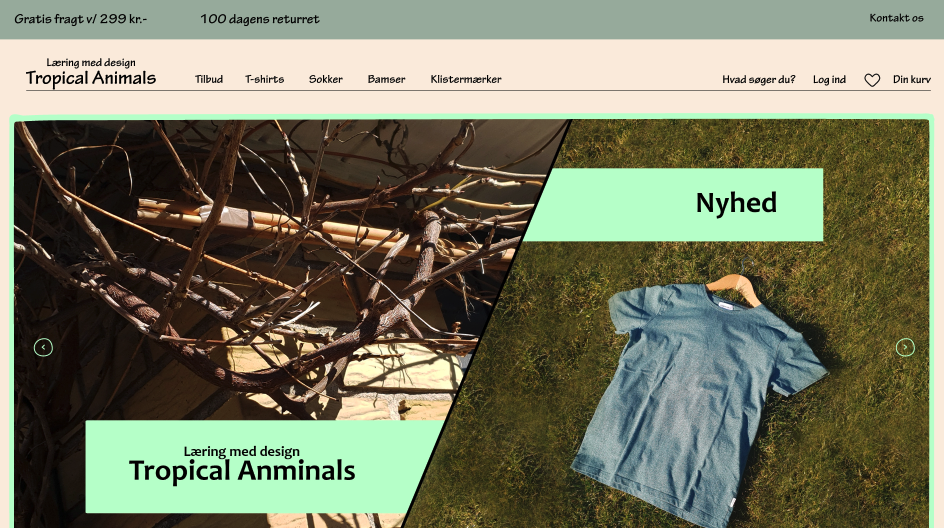
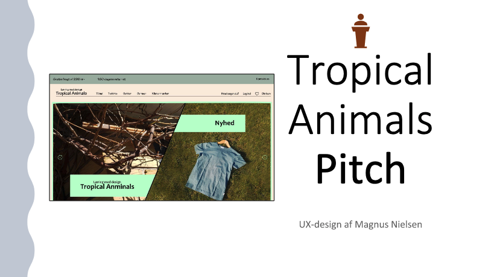

I forløbet med Team 3: Grundlæggende ux skulle vi designe en
fiktiv t-shirt webshop og ende ud med en XD-prototype.
Vi lærte om hvordan man skal, arbejde ud fra en case. Vi startede
med at lave en koncept beskrivelse af vores virksomhed, derefter
brugte vi de 4 research former: desk research, observations
research, interview research og survey research. Ud fra alt
research skulle vi finde komme frem til en idé, som har en løsning
på casen. Derfra benyttede design sprint metoden som forløber sig
gennem de 5 faser: map, sketch, decide, prototype, test. Imens vi
havde design sprint forløbet, tog vi billede og redigerede dem i
Photoshop, lavede copy mircocopy og tagline. Jeg forsøgte også på
at optimere overblikket for brugeren, så de kommer hurtigt muligt
fra a til b, i dette tilfælde fra forside til et produkt er
købt.
Jeg valgte at lave en t-shirt webshop, som skulle sælge t-shirt,
sokker, bamser og klistermærker med tropiske dyr på med en
målgruppe på 13-18-årige, for at lærer dem og tropiske dyr, med
hjælp fra design. Jeg gik efter nogle varme, naturlige og
afslappende farver, som jeg synes naturen har af effekt på
mennesker. Dg har jeg en lysegrøn, som stikker ud, der kan bruge
til at fremhæve tilbud og nyheder. Det handlede meget om at gøre,
det sjovt og spænende på noget, da unge mennesker hurtigt mister
interessen for ting. Hvis der er noget som jeg skulle ændre på
prototype, er det nok, at lave en del flere test, for at se om den
fanger målgruppen.


Pitch
Grundlæggende ux
I denne opgave blevet vi introduceret til Pitch, som handler om at
præsenterer et produkt for fx en kunde. En pitch struktur består
af tre overordnede dele: UX-research, UX/UI-design og UX-test.
Vi fik til opgave at fremlægge for vores studiegrupper, som endte
ud i, jeg ændrede min pitch, da jeg havde for meget indhold til
for lidt tid. Da jeg blev valgt af tilfældig lodtræning, skulle
jeg fremlægge foran klassen hvilket gik bedre end første gang, da
jeg havde fået forbedret min pitch.